Visual Communication
Creating graphics, presentations and visual materials to communicate information clearly.
Professional Placement · 2024
Digital Media, Visual Communication & Digital Content
A six-month professional placement within the KT Outreach & Innovation Department, applying digital media design across communication, education, research and digital learning.
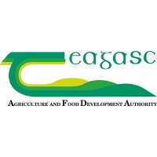
Organisation
Teagasc
Department
KT Outreach & Innovation
Duration
June – December 2024
Areas
Visual Communication · Digital Content · Data Visualisation · Digital Learning
Placement Overview
My placement gave me the opportunity to apply design, communication and digital media skills across a wide range of real-world projects.
Working within Teagasc's KT Outreach & Innovation Department exposed me to projects spanning visual communication, digital learning, data analysis, research and internal communication.
The variety of work required me to adapt how I communicated information depending on the audience, platform and purpose of each project.
My Work
Creating graphics, presentations and visual materials to communicate information clearly.
Organising and analysing data before translating important findings into accessible visual outputs.
Supporting course development, LMS work and the organisation of educational content.
Supporting focus groups and collaborative workshops to gather and organise feedback.
Contributing to digital platforms and organising information for internal audiences.
Working alongside colleagues, researchers, educators and external stakeholders.
Data → Visual Communication
Part of my placement involved working with information from CECRA courses and surveys before translating key findings into clear visual communication.
Data Analysis
I used Excel to manage participant records, review survey and course feedback, identify useful insights and confirm attendance.
This information then informed visual outputs that made key results easier to understand and communicate.
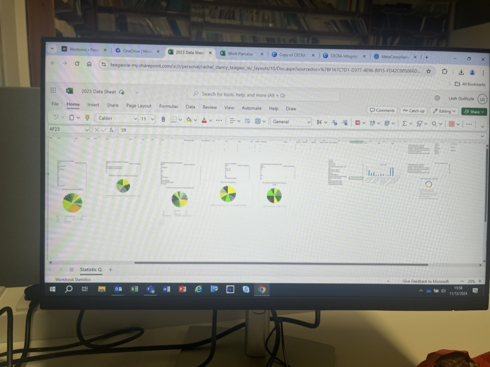
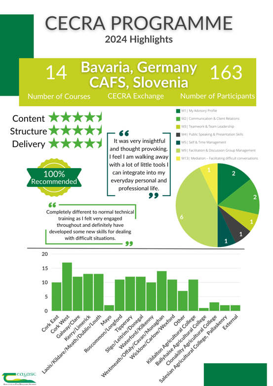
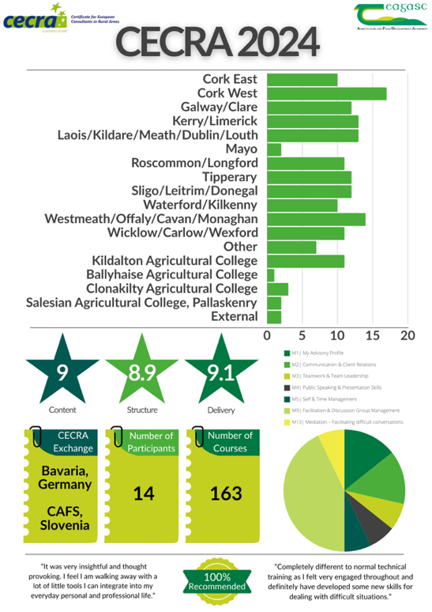
Visual Communication
The CECRA work strengthened my understanding of how hierarchy, layout and data visualisation can transform detailed information into something more approachable and useful.
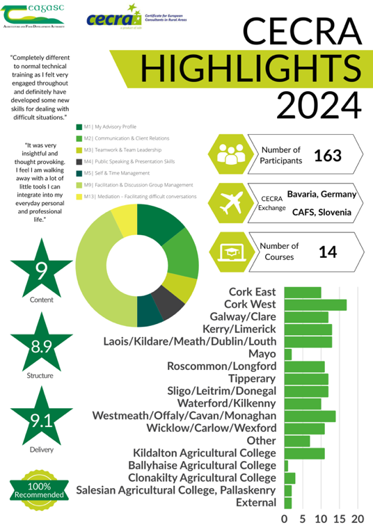
Digital Learning
Course development and content management formed another significant part of my placement.
I helped organise course materials so that instructional designers could access and use them efficiently, while also gaining experience with Learning Management System development and course administration.
The work highlighted the importance of clear information architecture and organisation behind effective digital learning experiences.
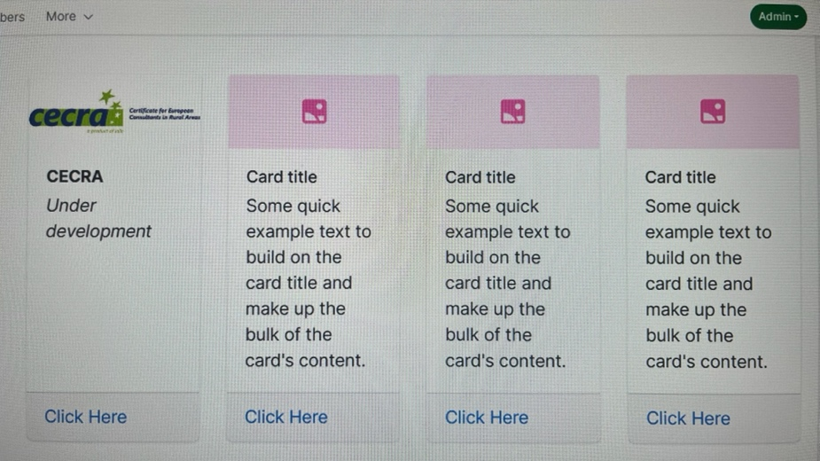
04 · Research & Collaboration
Farmer focus groups provided direct insight into the experiences and expectations of people who would use Teagasc's developing Learning Management System.
Focus Groups
I supported farmer focus groups relating to the development of the Learning Management System, listening to participants and recording their perspectives.
After the sessions, I gathered and organised the information in Mural so that the feedback could be communicated and referred to more easily during future development.
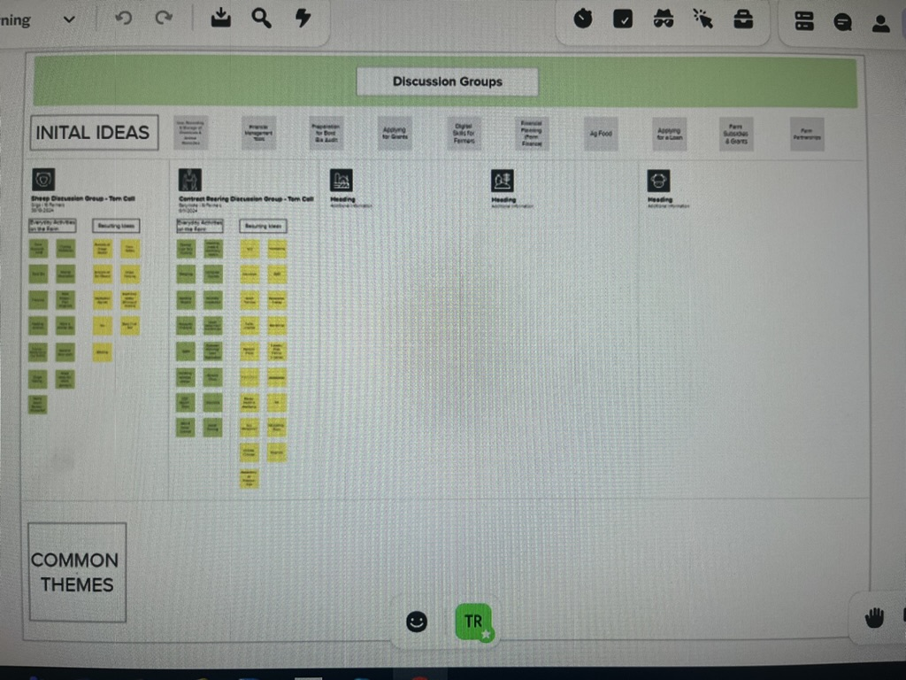
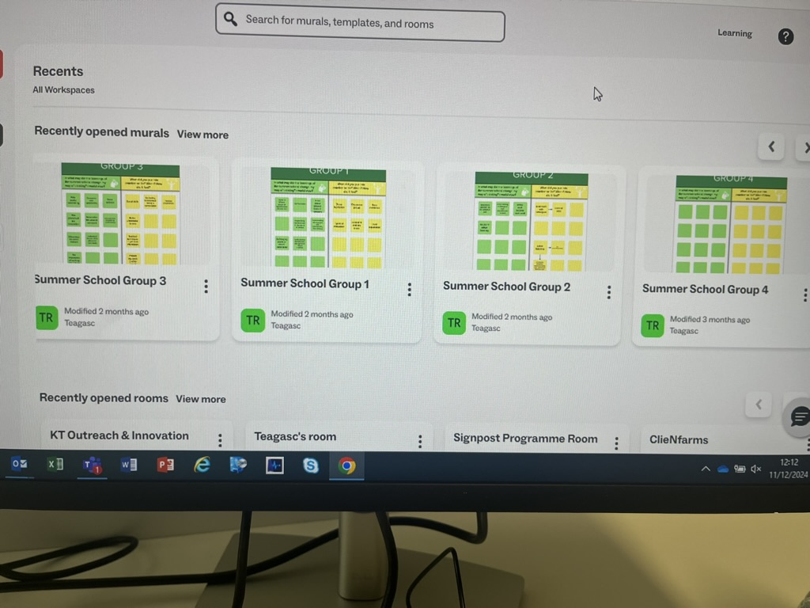
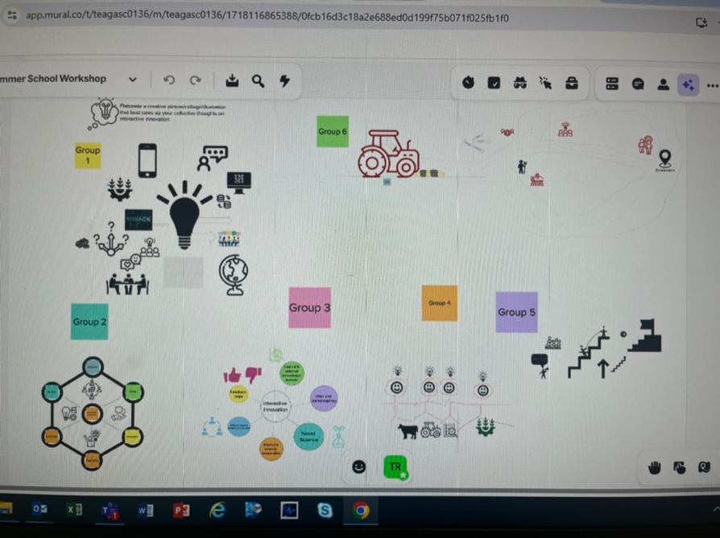
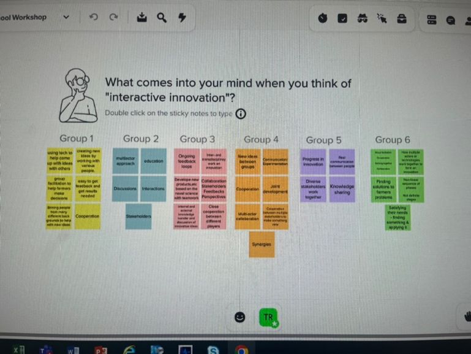
Web & Digital Content
I contributed to the organisation and development of content for the department's WorkVivo space.
This involved considering information structure, content updates, visual consistency, accessibility and the overall user experience within an existing digital platform.
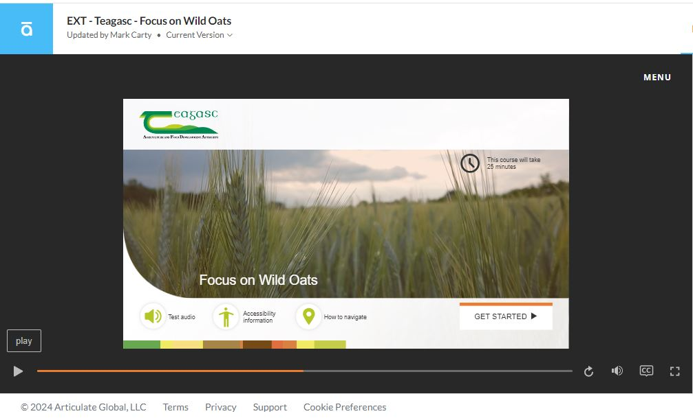
Presentation & Visual Design
Visual communication formed an important part of my placement. I created and contributed to presentation material designed to communicate educational, reflective and promotional information clearly.
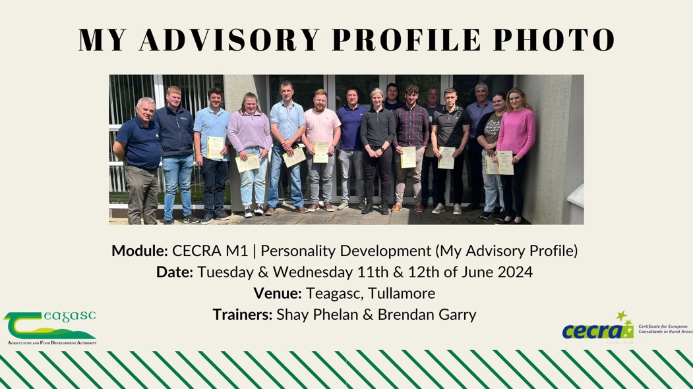
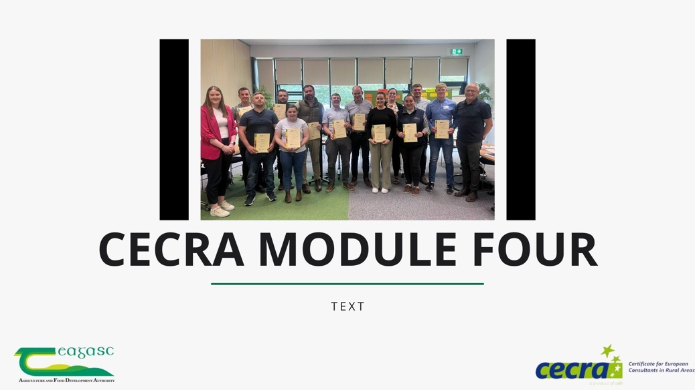
07 · Beyond the Desk
My placement also gave me opportunities to experience Teagasc's work outside my day-to-day digital projects, including professional media production, agricultural environments and industry events.
Oak Park
A visit to the Oak Park studio gave me first-hand insight into professional filming and live broadcast production, including lighting, camera work, audio and live editing.
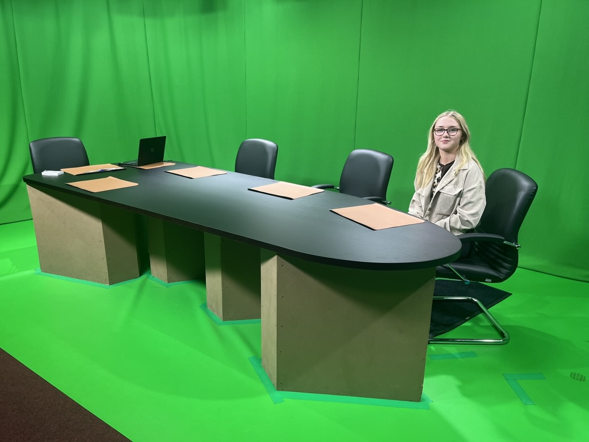
Across Teagasc
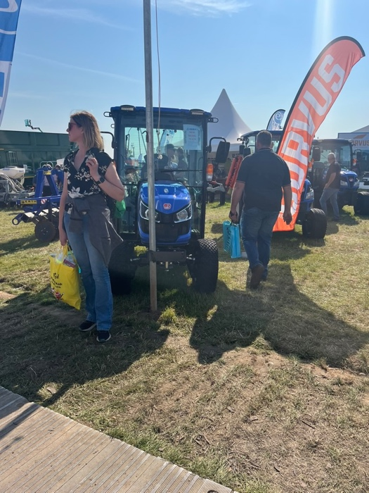
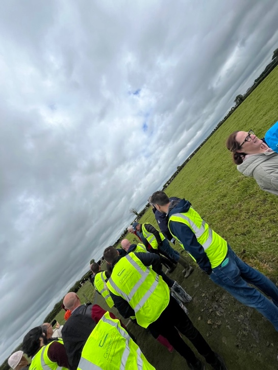
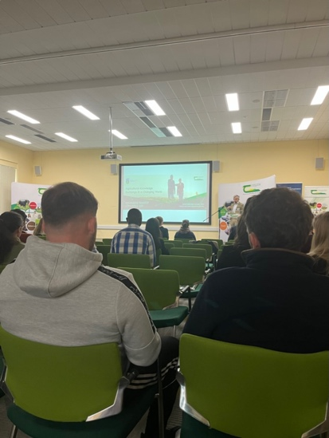
08 · Reflection
The placement showed me how digital media skills can operate across design, communication, research, education and data rather than within a single role.
Working within a professional organisation developed my ability to communicate with different stakeholders, manage varied tasks and adapt my approach to the needs of individual projects.
It also strengthened my interest in combining visual communication with research and information — an area I have continued to develop through UX design and data-focused study.